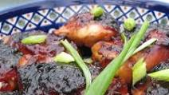

Caramelized Baked Chicken

Roast chicken pieces with sticky, sweet and tangy coating.
Really good for wings, messy but so so good! Excellent for
chicken thighs, drumsticks and also for boneless chicken breasts.
Ingredients needed for this dish
- 3 lbs chicken pieces (wings, thighs, drumsticks or
chicken breast)
- 2 tablespoons olive oil
- 1/2 cup soy sauce
- 2 tablespoons ketchup
- 3/4 cup pure maple syrup (or honey)
- 2 garlic cloves, minced
- salt and pepper
Preparation instructions
- Preheat oven to 375 degrees F (190 degrees C).
- Place chicken in a 9x13 inch baking dish.
- Mix together the oil, soy sauce, ketchup, honey,
garlic, salt and pepper Pour over the chicken.
- Bake in preheated oven for one hour, or until
chicken is cooked and sauce is caramelized. (turn
the chicken pieces every so often to avoid them
burning!)